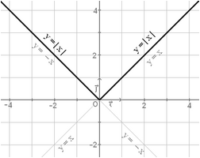
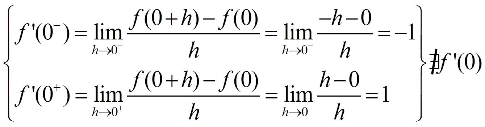
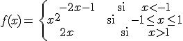
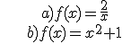

Derivadas
Continuidad y derivabilidad
TEOREMA: si una función f es derivable en x = a, entonces también f es continua en x = a.
NOTA. No todas las funciones continuas en x = a son derivables en x = a.
Ejemplo: f(x) = |x| en x = 0

Como puedes ver, derivabilidad implica curva suave y no derivabilidad implica pico.
Definimos la función derivada como:
Sólo estudiamos la derivabilidad en los puntos en los que la función es continua.
Ejemplo:
f es derivable en R-{1}
Ejercicios
1) Encuentra la función derivada de:

2) Encuentra la abscisa en la que la pendiente de la recta tangente a la curva de f(x) = x2 + 1 es 6.
Soluciones: 1) f'(x) = -2/x2; b) f'(x) = 2x; 2) x = 3
Obra publicada con Licencia Creative Commons Reconocimiento No comercial Compartir igual 4.0